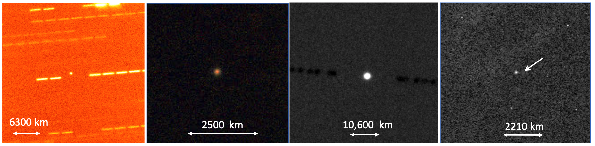

2017年9月，xx望远镜发现了一个星际物体（奥陌陌）飞越地球轨道，距离地球最近时大约0.16天文单位，飞掠地球后三天才被发现。后来确定其速度大约26.42km/s，大于太阳系逃逸速度，说明其来自太阳系外。因为其高速度，其亮度在一周内下降10倍，一个月内会下降100倍，观测窗口期很短。
对奥陌陌的光学和光谱观测显示，奥陌陌是红色的，这和已知的很多星际物质，如彗星，D陨石等类似。但是颜色不能直接推出奥陌陌的成分，因为表面富含有机物，或者富含铁，或粗糙的表面都可能表现为红色。光谱特征和其旋转状态有关。

奥陌陌的半径大约70-200米。大型天体的亮度变化通常取决于观测的角度和天体表面反照率的分布情况，但是小星体的亮度变化主要是由于其形状。
奥陌陌的长宽比估计最大可超过6，但由于不知道奥陌陌的自转轴向，因此这个长宽比只是保守估计。但奥陌陌肯定是一个长条，这符合很多人心中宇宙飞船的印象，因此关于奥陌陌是宇宙飞船的传言不绝于耳。
奥陌陌颠覆了我们对星际物质的认知。首先，奥陌陌是从奥尔特云过来的，之前认为奥尔特云的物质通常是周期很长的彗星。奥陌陌的速度也太快了。
关于奥陌陌的形成，目前有一些猜想。
奥陌陌可能是双星系统或白矮星之间的潮汐扰动产生的碎片，或者巨大星体的喷射物，或者红巨星暴涨推动的行星碎片。
一种解释是：奥陌陌是某个恒星外围碎片。恒星在形成过程中，星盘上的物质会逐渐形成行星，而在恒星系外围形成碎片环。这在光谱上显示为中红外信号。当恒星演化为主序星，逐渐失去质量时，碎片可以在星际物质的带动下脱离恒星系成为星际旅行者。